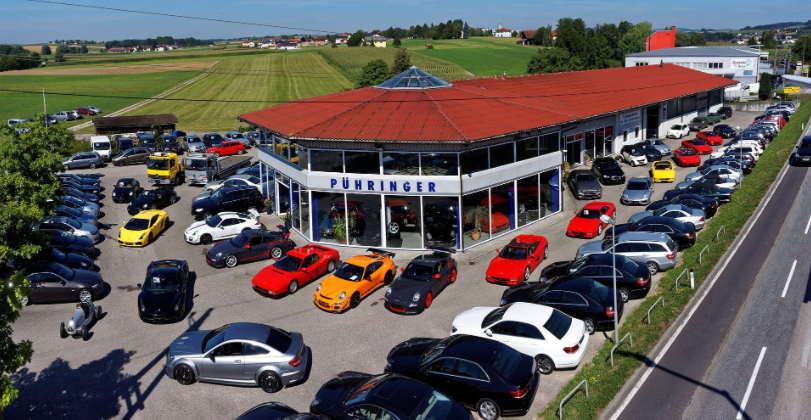

Treten sie mit uns in Kontakt
Der Familienbetrieb Pühringer ist ein Unternehmen mit langjähriger Tradition, die bis ins Jahr 1649 zurückreicht. Über die Jahrhunderte hat sich der Betrieb ständig weiterentwickelt und neue Geschäftszweige wurden erschlossen. Seit 1998 bietet die Automobile Pühringer GmbH als markenunabhängiger Betrieb eine große Vielzahl an Marken zu fairen Preisen an. Unsere MitarbeiterInnen sind qualifizierte Fachkräfte, die Sie kompetent von der Auswahl eines geeigneten Fahrzeuges, über Probefahrt bis zur Finanzierung und Anmeldung sowie im Aftersales bestens beraten und betreuen. Wir freuen uns über Ihre Anfragen

Öffnungszeiten Verkauf
Montag - Freitag
8.00 - 12.00 13.00 - 18.00
Samstag
9.00 - 12.00
Automobile Pühringer GmbH
Bruck 52, 4722 Peuerbach
AUSTRIA
Telefon: +43 7276 4133-0
E-Mail: kfz@auto-puehringer.at
Verkauf
Bruck 52, 4722 Peuerbach
AUSTRIA
Telefon: +43 7276 4133-16
E-Mail: verkauf@auto-puehringer.at
Karosserie & Lackierung
Bruck 52, 4722 Peuerbach
AUSTRIA
Telefon: +43 7276 4133-32
E-Mail: lack@auto-puehringer.at
Werkstatt
Bruck 52, 4722 Peuerbach
AUSTRIA
Telefon: +43 7276 4133-28
E-Mail: werkstatt@auto-puehringer.at